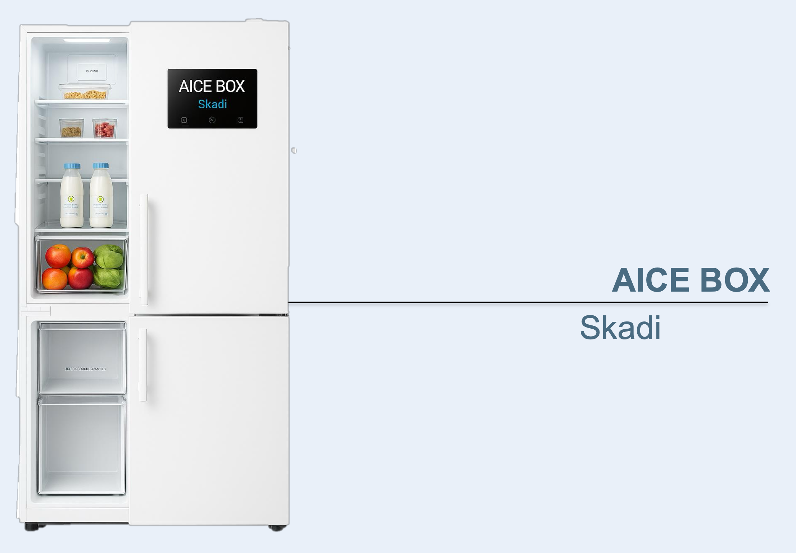

AIceBox Skadi
Skadi incarne le froid de précision. Grâce à ses capteurs intelligents, il adapte la température à chaque type d’aliment.
Caractéristiques principales
- Contrôle précis par zones de température
- Technologie AIceCooling™ pour un froid homogène
- Capteurs d’humidité intégrés
- Capacité totale : 600 L
- Niveau sonore : 40 dB
Étiquette énergétique
⚡ Classe : A
🔋 Consommation : 230 kWh/an
📦 Volume total : 600 L
🔈 Niveau sonore : 40 dB
💰 Prix : 2 199 €
← Retour à la gamme AIceBox